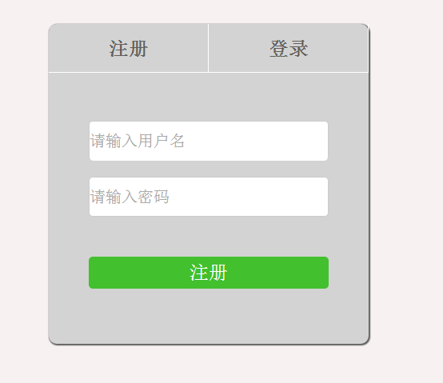

-

李立丽
WEB前端工程师
Email:756543557@qq.com
Tel:15972143551
-
待办事项表预览
使用技术:
Vue、Webpack、ES6、LeanCloud
项目描述:
可以注册,登录账户，对待办事项完成标识功能和删除功能.
实现细节:
根据LeanCloud的文档,根据其提供的api,实现注册,登录以及保存待办事项的内容。在刷新页面或者重新登录后内容不会消失。
-
什么值得买首页预览

使用技术:
jQuery js
项目描述:
根据设计稿还原页面，使用jQuery、构造函数的模式进行开发，添加轮播、Tab、stickup等功能。
实现细节:
运用了浮动、定位、负 margin、垂直居中等知识点 完成页面的布局。然后通过使用轮播和tab组件，让同一个页面中多个轮播和不同triggerType的Tab运行，使用stickup将导航条始终固定在页面的最顶端。
-
技能掌握
- 1. 掌握 HTML/CSS 的基础知识,了解常见的布局。
- 2. 对代码的规范性、语义化有一定认识,可以写出符合 W3C 规范的页面。
- 3. 熟悉常见效果、原生、事件模型、DOM 操作、ajax、闭包、原型链、 函数的作用域、继承等方法.
- 4. 熟练使用 jQuery等主流库，了解一些主流框架如 Vue。
- 5. 了解 vue的使用,可以通过webpack进行简单的配置工作来开始Vue的开发。
- 6. 可以通过git进行简单的提交工作
- 7. 了解 HTML5、CSS3，可以实现简单效果。